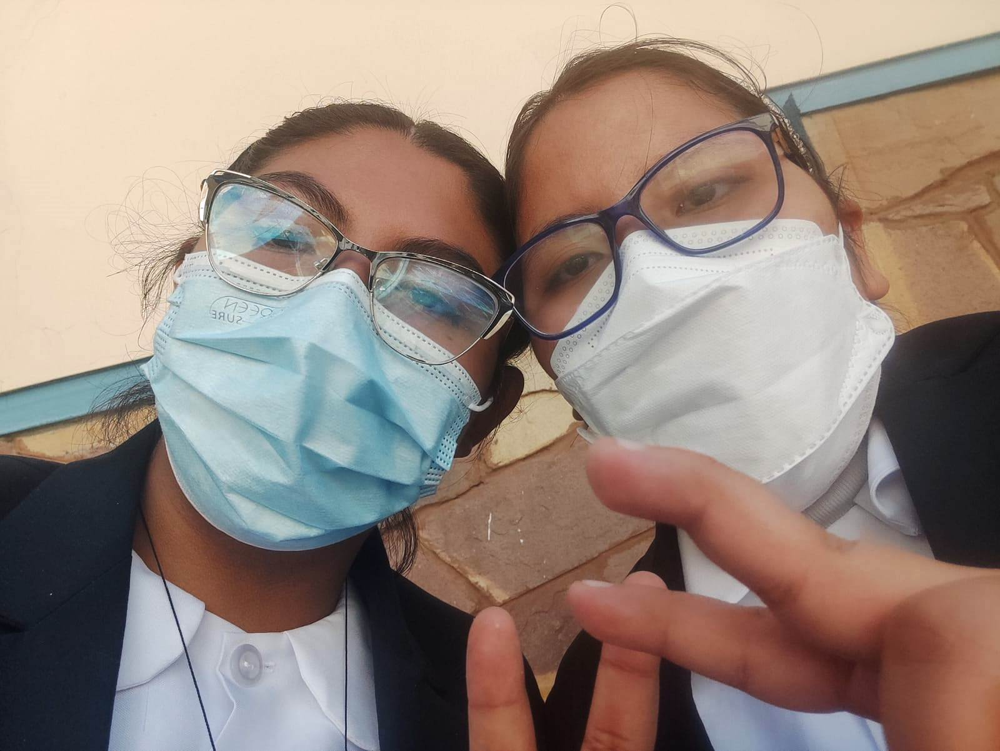

Patricia Saavedra



Patricia Saavedra Actualmente tengo 18 años, soy estudiante de la UMSA en la carrera de informática, voy en segundo semestre. Soy amigable, valiente, responsable y servicial.
Formación Académica: Estuidie en el colegio "Maria Auxiliadora", graduandome el 2023 de bachillerato junto al tecnico medio en la rama de contaduria general.
Amistades: Tengo amistades tanto en la universidad como las de colegio, una de las mas importantes es mis mejores amigas Manet, Nardy y Sid que me han acompañado en buenos y malos momento
Mis Hobbies: Como pasatiempo principal tengo el jugar ajedrez al igual que pasar cursos en linea para aprender mas cosas, me gusta la reposteria, la astronomia y leer libros de ficcion que contengan
diversas aventuras.